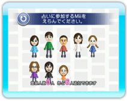
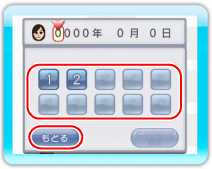

はじめて『きょうとあしたの占いラッキーチャンネル』をお使いになるときには、プレイヤーの分身となるMiiと、そのMiiに生年月日を登録する必要があります。この登録された生年月日によって、運勢を占います。Miiが登録されていない状態でチャンネルをはじめると、はじめにMiiの登録画面が表示されます。Miiはあとから追加で登録したり、削除したりすることもできます。
4 |
Miiを登録する |
 |
※Miiが登録されている状態でチャンネルをはじめると、はじめに運勢の総合点が発表されます（→P.6：運勢の総合点発表）。 ● Miiを登録する

1.Miiを選ぶ Wii本体に入っているMiiを、最大6人まで登録できます。登録したいMiiをポイントして

2.Miiに生年月日を登録する Miiを選んだら、生年月日を登録します。 ・『似顔絵チャンネル』で誕生日を登録している場合 ※『似顔絵チャンネル』で誕生日を登録していても、別の誕生日を登録することができます。当チャンネルで別の誕生日を登録しても、『似顔絵チャンネル』の誕生日に影響はありません。 ・『似顔絵チャンネル』で誕生日を登録していない場合 ● Miiを追加で登録する・削除する ※登録したMiiを『似顔絵チャンネル』から削除すると、当チャンネルに登録したMiiのデータも消去されます。 |

 |
 |
 |